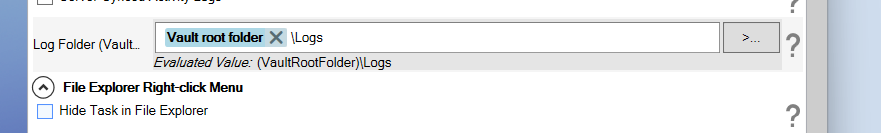

Options
When you choose PDMPublisher from the dropdown in the new task dialog, you will be prompted with a window similar to the one below:

Options Setup Page

Export Location
Export Location
Defines where PDMPublisher exports the generated files. The location can be inside or outside the vault. Make sure the path does not end with a backslash (\).
Extension-specific Location...
Opens a dialog where you can define a separate export location for each selected output extension.
Filename
Defines the exported file name. You do not need to include the file extension.
File Formats
Defines the formats PDMPublisher can export to, including PDF, DWG, DXF, U3D, IGS, STL, STEP, EPRT, EASM, HTML, X_T, X_B, 3MF, IFC, and BMP.
Create reference from destination file to source file
Creates a PDM reference from the exported destination file back to the original source file.
Use @ Tab to Evaluate Paths
Uses the @ configuration tab when evaluating variables used in the export location and filename.
Duplicate Handling
Delete duplicates outside the destination folder
Deletes duplicate files that exist outside the configured destination folder.
Export Options
Merge exported PDFs into one master PDF
Combines all exported PDFs from the affected assembly into one master PDF instead of keeping them as separate files.
Ignore sub-assemblies children when condition checks fail
Prevents PDMPublisher from processing the children of sub-assemblies when the sub-assembly itself fails the condition check.
Export affected document
Exports the affected top-level document.
Export references to file formats individually
Exports references of the active document individually to the selected file formats. Disabling this option does not affect PDF merging or ZIP archiving.
Work with latest version
Retrieves the latest version of the file from the vault before processing.
Quick view mode (Drawings Only)
Opens drawings in Quick View mode to improve performance, especially for large drawings.
Use Microsoft Print To PDF to save PDFs
Uses Microsoft Print to PDF when generating PDF output.
Convert multiple configurations
Exports all part and assembly configurations. The configuration name is appended to the exported filename.
Configuration Filter
Controls which configurations are processed. The * character can be used as a wildcard. You can also exclude specific configurations.
Map variables between source and destination file
Enables variable mapping between the source file and the exported destination file.
Variable Mapping...
Opens the variable mapping dialog where source and destination variables can be configured.
Ask user to select configuration on startup
Prompts the user to select the configuration to process when the task starts.
Archive all exported documents (.zip)
Packages all exported documents into a single .zip file.
Export sheet metal parts to 1:1 flat pattern DXF
Exports sheet metal parts as 1:1 scale DXF flat patterns.
Flat Pattern Settings
Opens the dialog used to configure the flat pattern DXF export options.
Use search to locate drawings
Searches the vault for the first drawing that references the affected document when a matching drawing cannot be found in the same folder.
File Explorer Right-Click Menu
Hide task from File Explorer right-click menu
Hides the task name from appearing under Tasks in the File Explorer right-click menu. This allows PDM administrators to hide the task from users while still allowing the task to run from a workflow transition.

Flat Pattern Settings
When Export sheet metal parts to 1:1 flat pattern DXF is enabled, the Flat Pattern Settings dialog controls how the DXF is generated.
Export flat-pattern geometry
Exports the flattened sheet metal geometry.
Include hidden edges
Adds hidden edges to the exported DXF.
Export bend lines
Includes bend lines in the flat pattern.
Include sketches
Exports sketches to the DXF.
Merge coplanar faces
Merges adjacent coplanar faces into the exported output.
Export library features
Includes library features in the DXF export.
Export forming tools
Includes forming tools in the DXF export.
Export bounding box
Adds a bounding box around the flattened part geometry.
Only export the inner diameter of countersink holes
Exports only the inner diameter of countersink holes. This option only works with countersinks created using the Hole Wizard feature.
Append FlatPattern to the flat pattern DXF file name
Appends FlatPattern to the DXF file name. This helps avoid overwriting files when a .SLDDRW file is also exported to DXF.
Sheet Metal Part Views
You have the ability to specify whether you want additional views of the sheet metal parts.
Split Bodies
Splits multi-body parts into separate files. For the HTML extension, this is only supported in SOLIDWORKS 2025 and newer.
The body name is appended to the end of the filename.
Important
This does not apply to sheet metal flat patterns.
Export History
Turn on activity tracking
Enables detailed task logging. This log records the activity performed by the task.
Server-Synced Activity Logs
Sends task logs to the server for centralized storage and review.
Log Folder (Vault Only)
Defines the vault folder where task log files are stored. This folder must be inside the vault, and the path must not end with a backslash (\).
BOM Settings
Template
Defines the BOM template used by PDMPublisher. Users can select from the available BOM layouts in the vault.
Calculation method
Defines how the BOM is calculated. Available options include As Built and Latest.
As Built
Uses the references from the version of the assembly that was checked in.
Latest
Uses the latest references of the assembly.
Important
PDMPublisher uses BOM layouts to calculate quantities when quantities are used in the printed PDF as custom annotations.
Table of Contents
Add table of content to merged PDF
Automatically inserts a table of contents into the merged PDF.
Table columns
Defines the information included in the table of contents. Available options are Just Name, Name and Quantity, and Custom.
Customize Table...
Opens a dialog where you can choose the custom columns to include in the table of contents.
SOLIDWORKS Version
Use this version of SOLIDWORKS
Specifies which SOLIDWORKS version PDMPublisher should use to process files. The list can include specific installed versions and the latest available version.
PDF Bookmarks
PDF bookmarks
Defines the text pattern used to create bookmarks in the merged PDF. Bookmarks make it easier to navigate between sections in the exported PDF package.
Ensuring Proper BOM Layout for PDMPublisher
In recent versions, PDMPublisher uses the PDM BOM instead of the SOLIDWORKS BOM. PDMPublisher uses the first BOM layout in your vault to calculate quantities.
To work correctly, the BOM layout must include the following columns:
<RefCount>for the quantity<Configuration>for the configuration name
If you are experiencing BOM-related errors, verify that these required columns exist in your BOM layout.
Tip
We recommend disabling auto-add extensions for all extensions used by the task, including txt.
This helps prevent race conditions between SOLIDWORKS PDM and the task during the file add process.
To change the auto-add extensions list:
- Open the PDM Administration tool.
- Right-click the username or All Users.
- Select Settings.
- Click Adding Files.
- Edit the file extensions list.